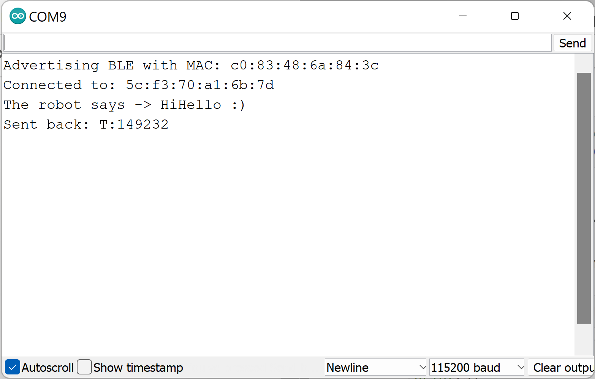
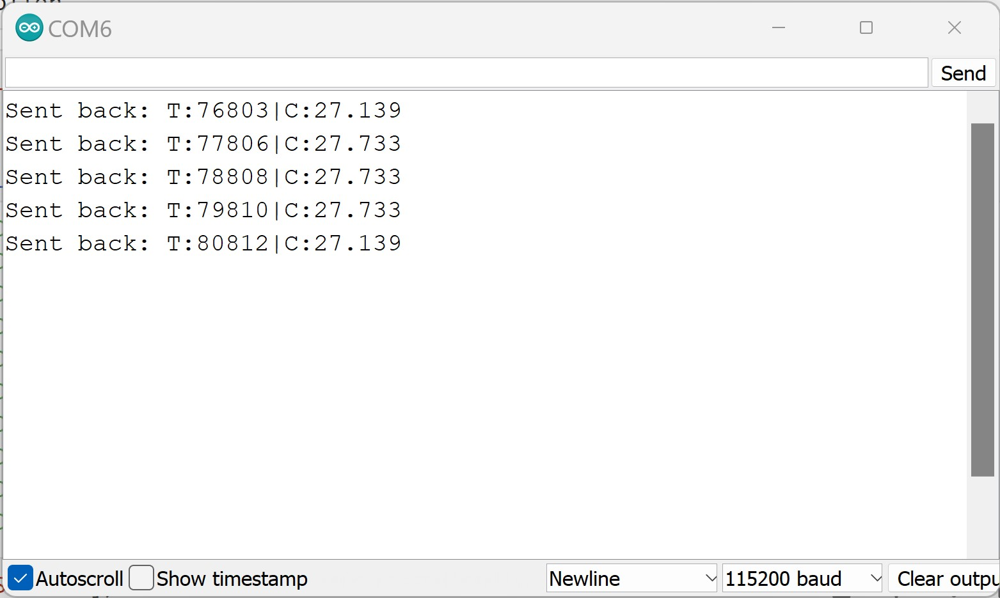
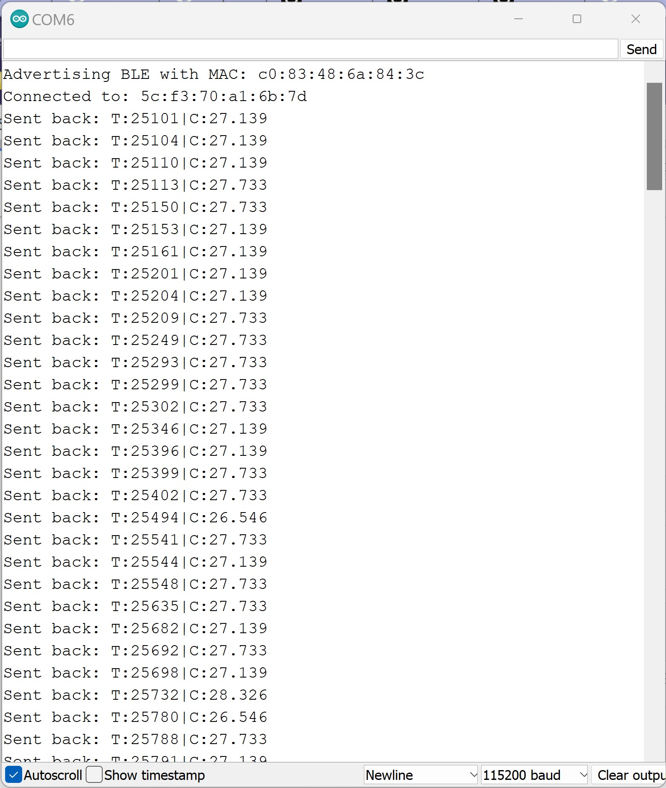
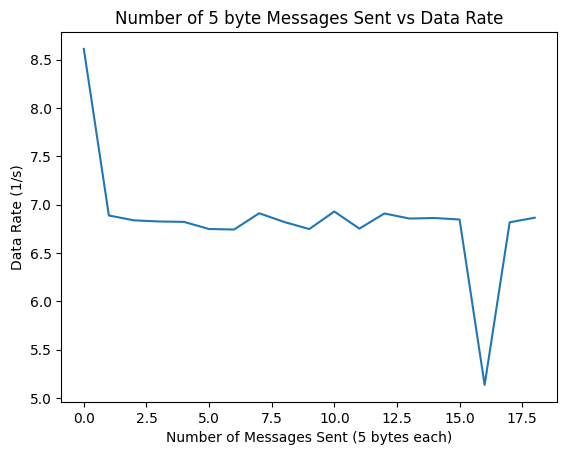
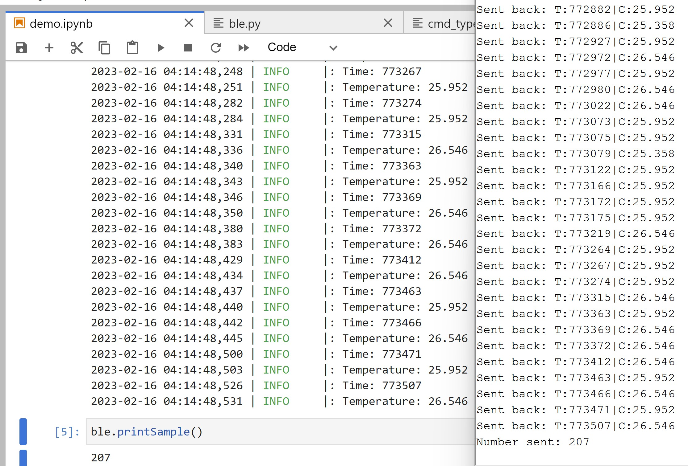

Objective
In lab 2, I went through various tasks related to Bluetooth communication between my computer and the Artemis. The Artemis side of this involved modifying the .ino files to implement custom commands. The Python side involved adding handlers that processed the information being sent from the Artemis. I went through various tasks that involved sending and receiving data to and from the Artemis board, creating new commands, and creating new handlers. As a ECE 5160 student, I also looked at the speed and reliability of the data.
Prelab
The prelab tasks involved setting up the environment to ensure that the Bluetooth connection would work. Because I run Windows 11, I followed the instructions of a fellow student and was able to use WSL2 to properly get the environment set up on my laptop. I started by ensuring that my Python and pip were the latest releases. Then, I set up the virtual environment. Following the lab handout, I first installed venv and then created the new virtual environment “FastRobots_ble”. Then, I activated the virtual environment with the command .\FastRobots_ble\Scripts\activate. To view the MAC address, I uploaded the ble_arduino.ino code to the Artemis and found that the MAC address was c0:83:48:6a:84:3c.
The ArduinoBLE library was used for the Arduino side. The BLECStringCharacteristic class allows us to easily use C to read and write the characteristic value. The EString class allows us to easily interact with strings (clearing, setting, appending, etc). The RobotCommand class helps with processing commands sent from the laptop. The code that runs on the Artemis is ble_arduino.ino. On the Python side, the codebase used bleak to connect to the Artemis board. cmd_types.py enumerates the commands. base_bly.py provides an interface for a BLE device; ble.py is specific to the Artemis.
The Bluetooth connection starts by having the Artemis advertising with its MAC address and a unique UUID. The computer looks for a device that matches these values and connects to it. After connecting, the computer sends messages to the Artemis and the Artemis responds with the proper data.
Configurations
I ran the ble_arduino.ino code, which printed out the MAC address to the Serial port, as mentioned previously. I then generated a unique UUID in the Jupyter Notebook and changed the connection.yaml file to match these two strings.
Additionally, the Arduino code was modified to the following:
#define BLE_UUID_TEST_SERVICE "0c081978-00cc-40e9-8aea-73532ef2ce69"
Demo
After doing this, I was able to successfully connect to the board and run the demo file, as seen below.
For the remaining functions, the list of command types was updated in the enum CommandTypes and in the cmd_types.py script.
Echo
After running the demo, the next task was implementing the ECHO command. In this, the computer sends a string to the Artemis, and the Artemis sends back the original string with added text around it. To do this, I sent the command and received the data with the following:
In the Arduino side, I simply added the ECHO case to the switch statement in the Arduino code. In this, I cleared the character array and appended the new characters, in my case “HiHello” and “:)” before writing the message back.
Get Time Millis
The GET_TIME_MILLIS task was very similar to the ECHO task. In this, the GET_TIME_MILLIS command would receive the current time in ms in the form of "T:123456". To do this, I added another case to the Arduino code that appended the value of millis() to the estring. This command did not require any string input from the Python side. Thus, the command to call it was ble.send_command(CMD.GET_TIME_MILLIS,"")
In the following photo, you can see the results of both the ECHO and the GET_TIME_MILLIS in Python.
In the following photo, you can see the results of both the ECHO and the GET_TIME_MILLIS in the serial monitor.
Get Temp 5s
In this task, I recorded five pairs of temperature and time data, once every second. I used "T:" and "C:" to differentiate between the time in milliseconds and the temperature in Celsius. Additionally, the "|" symbol was used to split the readings.
For this task (and the remaining tasks), I had to create notification handlers in the ArtemisBLEController class to parse the information from the Artemis responses. The handler is shown below:
Note the indexing of the data input to be from 2. This is because I wanted to remove the "T:" and "C:" from the temperature data. I also used the logging functions to easily print out which data had been extracted.
In Jupyter lab, I called the handler with the ble.start_notify(ble.uuid['RX_STRING'], ble.parseTemp5s), which was different from the previous tasks, and received this output.
Get Temp 5s Rapid
This task was nearly the same as the previous task. The Arduino code was slightly modified to allow for rapid readings throughout the entire 5 seconds. This meant keeping track of the initial time and the current time, and exiting the while loop that sent the data back to the computer when that value exceed 5000 ms. Additionally, the delay was removed. The rest of the code on the Arduino side remianed mostly the same.
On the Python side, this was even simpler, as I just called the previous handler within the new handler.
The Arduino serial monitor and Jupyter output demonstrates the large number of data sent from the Arduino within this five second period.
To deal with the size limit, I cleared the estring each time I read the data.
Limitations
Let us assume that all 384 kB of RAM are used (this is not realistic, as some of this space will be used for overhead). If the values are 16-bit values, then we can use the following conversions:
384 kB = 393216 bytes = 3145728 bits
150 Hz of 16-bit data for 5 seconds = 5 * 150 * 16 = 12000 bits of data collected over 5s
This means that over 1s, 2400 bits of data are collected
3145728 bits of memory / 2400 bits of data per second = 1310 seconds of data = 21.8 minutes of data
Alternatively,
- 3145728 bits of memory / 12000 bits of data per 5s = 262 times that we can collect 5s of 16-bit data at 150 Hz
This is not great, as with the addition of overhead and any other stored variables, this will be an even smaller amount of data and might cause our robot to fail during operation.
Effective Data Rate and Overhead
To send messages with varying legnth to the Artemis and record the time delay between the messages, I added a new command called DATA_RATE that would simply echo the messages back to the computer, without any additional characters appended. In the Python code, I used a for loop to build messages of varying lengths and called the DATA_RATE command, recording the time with time.time()right before calling the command and within the handler. The differences are plotted below for 5, 40, 80, and 120 bytes of data.
As one can see, the data rate decreases as the messages get larger, meaning that the time between the message being sent and received increased. This is expected, as larger data will require more data to transfer.
To determine whether a slowdown happened for many messages of a small size, I reused the DATA_RATE command and sent 20 5-byte messages and recorded the times. As one can see, a slowdown in the data rate did not happen for this number of messages. While I was not able to collect data for 100s of data points, it may be the case that a slowdown is detected at that volume.
Reliability
As previously mentioned in the Get Temp 5s Rapid, I did not add any delays between each data point being sent. I added a variable that kept track of how many messages were sent over the 5 second period, and by making sure that number matches the number of non-empty data that was received, we can determine whether the system missed any messages. As you can see below, there are no missed messages, meaning that our system is reliable!
